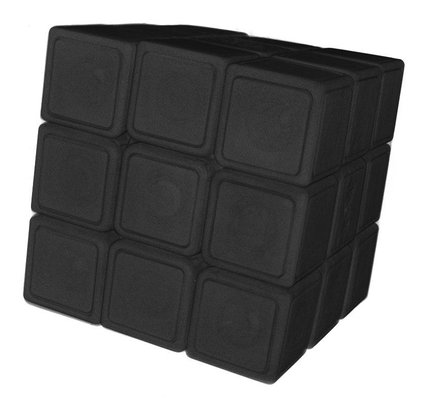
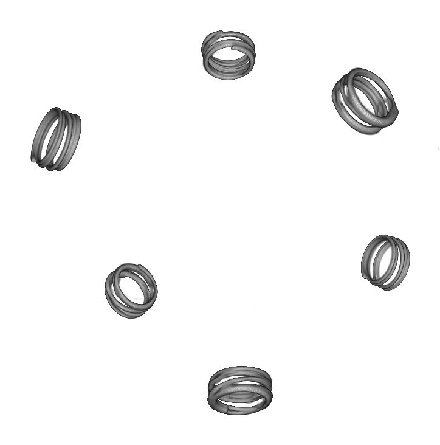

Puzzle cubeKhối rubik

3D 3D
3D

3DA closed mechanism of interlocking plastic parts and six springs, opened virtually, layer by layer.
Một cơ cấu khép kín gồm các chi tiết nhựa khớp với nhau và sáu lò xo, được mở ra ảo theo từng lớp.